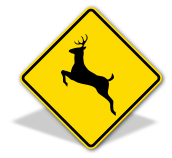
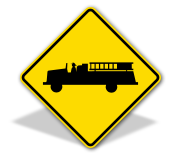
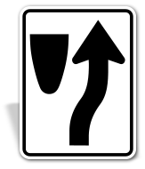
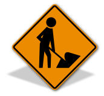
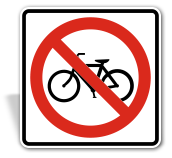
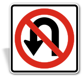
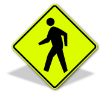
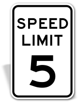
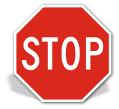
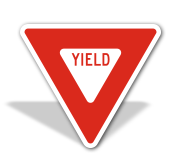

Traffic Signals and their Meaning
Whether you are studying for your driver’s exam or saw an unusual sign that you do not remember, it is always a good idea to familiarize yourself with it. Recognizing traffic signs and knowing their meanings can help drivers make safe driving decisions faster and more easily.
Here are 10 popular traffic signs and their meanings:
-

Deer Crossing Sign
This road warning sign is not an opportunity to ask why the deer crossed the road. As defined by the Manual on Uniform Traffic Control Devices (MUTCD) by the Federal Highway Administration, the MUTCD W11-3 deer crossing sign alerts drivers to areas where the population of deer is active and may enter the roadway.
An average white-tailed deer, which is common throughout North America, weighs around 100 pounds and is about three or four feet tall.
Seeing a deer of this size on the road is a very serious situation, and as a warning, deer crossing signs can help drivers pass safely through these areas.
-
Emergency Vehicle Warning Signs
Possibly the least frequently seen warning sign on the list of traffic signs and their meanings, the emergency vehicle warning sign is one of the most important.
Similar to the deer crossing signs in shape and design, MUTCD W11-8 signs alert drivers to upcoming fire departments, ambulance stations, and other areas where emergency vehicles could be entering the roadway with limited warning to drivers.
Drivers should also refrain from pulling over in these areas to keep it clear for emergency vehicles to pull in and out of the station.
-
Keep Right Sign
When a road narrows, due to dividers or other obstructions, drivers need to be made aware of the change in the path of the roadway.
MUTCD R4-7 and MUTCD R4-8 are the “keep right” and “keep left” versions of the same obstruction warning. These regulatory traffic signs aid in the flow of vehicles when these slight obstacles are present.
-
Men at Work Signs
MUTCD W21-1 is a temporary warning sign used to alert drivers of upcoming road work. Orange is used on this sign because it is one of the most visible colors to the human eye, and can be noticed above other traffic signs on the road.
When driving through work zones, safe driving is at its highest premium. Men at work signs are generally accompanied by other temporary warning signs, such as “road work ahead” signs and “detour” signs.
-
No Bicycle Signs
Bicycle riders are subject to many of the same traffic control signs that drivers are on the roadways.
No bicycle signs, MUTCD R5-6, prohibit bicycle traffic from entering a roadway or facility. If used at a facility, these signs should be posted at the entrances.
Other bicycle-related traffic signs are no parking bike lane signs (MUTCD R7-9) and bicycle warning signs (MUTCD W11-1).
-
No U-Turn Signs
There are a few variations of a no U-turn sign, but the example shown here is the official MUTCD version (MUTCD R3-4). With the curved arrow showing a U-turn and bold prohibition symbol over it, this standard design is understood to express areas where drivers cannot change the direction of their vehicle into the opposite direction.
-
Pedestrian Crossing Signs
There are a few MUTCD versions of pedestrian crossing signs that are posted near crosswalks and intersections.
MUTCD W11-2 is used in a majority of settings, and is pictured here. MUTCD S1-1 is a pedestrian school area sign, and is posted in school zones. Both signs use a yellow-green fluorescent reflective sheeting that enhances its visibility on the roads.
-
Speed Limit Signs
Speed limit signs are essential traffic control signs, and can vary in the limit depending on the specific state that you are driving though.
Often while driving through residential streets, speed limit signs may not be seen. This is because the speed limit for most residential areas is 25 miles per hour, and this law is understood by drivers who pass their driving exams.
Many highways have speed limits set at 55 miles per hour, but this can be changed by the state and will vary. Other common limits on highways are 45 miles per hour and 65 miles per hour.
-
Stop Signs
Stop signs (MUTCD R1-1) are likely the most iconic of all traffic signs. Both the shape and color are important to how a stop sign is recognized and understood.
No other sign is of an octagon shape, and no other sign is red in color. This is done because of the importance a stop sign has on traffic safety.
Stop signs alert drivers to intersections and other areas where traffic may be traveling in opposite or crossing directions.
-
Yield Signs
Yield signs (MUTCD R1-2) are similar to stop signs, but used in less dangerous situations. Used at passive cross streets or traffic circles, yield signs help to keep traffic flowing, while still allowing drivers from different directions to pass through.
The yield sign symbol is often used with pedestrian crossing signs where it is the state law to yield to pedestrians in the crosswalk. They can also be found on in-street crossing signs.